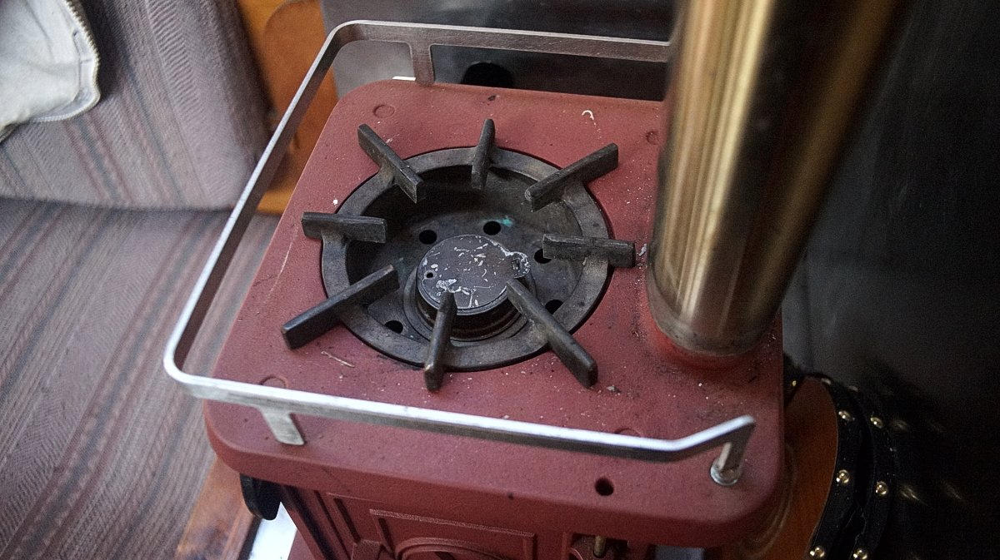
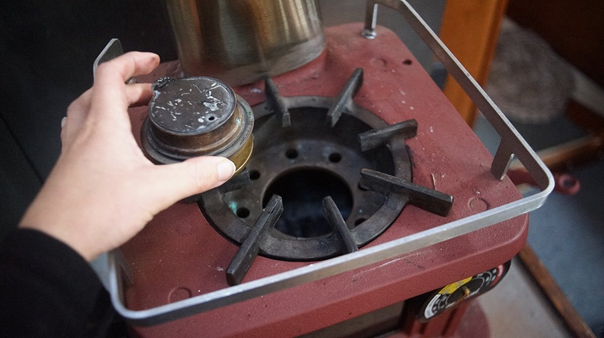
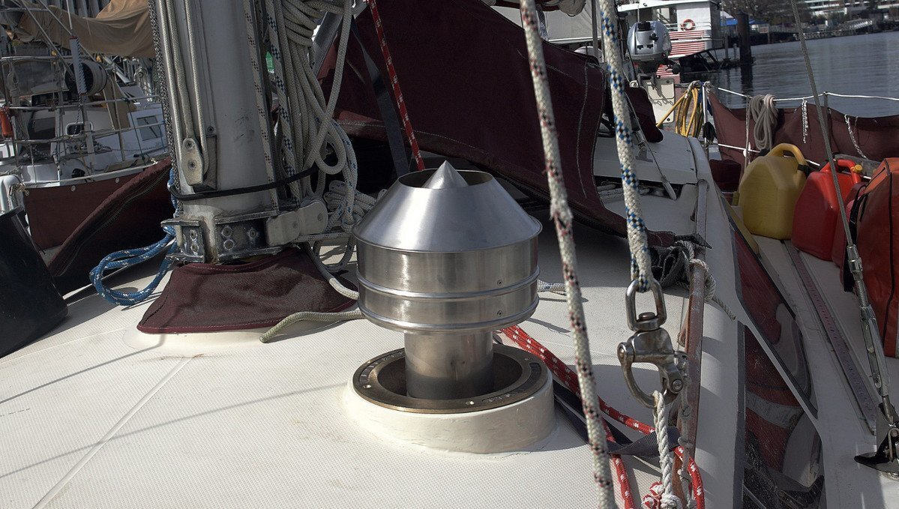
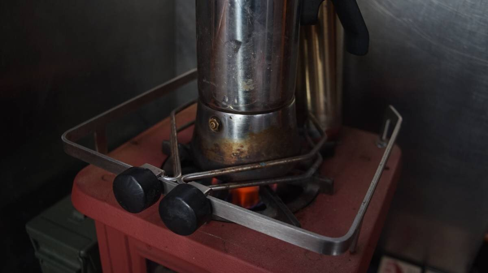

woodstove

In early 2021, we bought and installed the 'laptop' of cookstoves, a cast iron Sardine woodstove by Navigator Stoveworks. This stove is designed specifically for boats, its stove pattern sets have their roots in Nova Scotia, Canada. Starting in 1891, the Lunenburg Foundry produced marine equipment for yachts and commercial vessels. They ceased production in the early 1990's, and Navigator Stoveworks utilized their foundry patterns and continued to produce them. We are glad they did, as they are wonderful little stoves.
The Sardine is 30x30x28 cm (12 x 12 x 11 in), and weighs 16 kg (35 Lbs). It outputs 7,500-18,000 BTUs [ 2-5 Kw.] We installed it in the saloon, on a custom platform that we built (we also built the metal shield). This woodstove is installed on a 10m(33ft) fiberglass sailboat.
Navigator Stoveworks also makes a drop-in alcohol stove, for use in the summer when it's too hot to burn wood.
The ring is solid, cast bronze and fits into a raw Sardine top plate casting. Unused fuel can be left in the burner and stored for future use. We bought it secondhand from a seller in the United States. The drop-in takes up little room, and has few parts that can degrade or fail. The burner itself is a standard Trangia model), and a replacement would be easy to find considering they've been making and distributing them since the 1950's.
The burner flame is very similar to a gas burner.
The pot holders for our propane stove work well when attached to the guard rail of our wood stove! It can help us cook while underway, reducing the risk of spills! We used it with our coffee pot, our most troublesome pot (it is so so tall).
See the process of our woodstove installation.